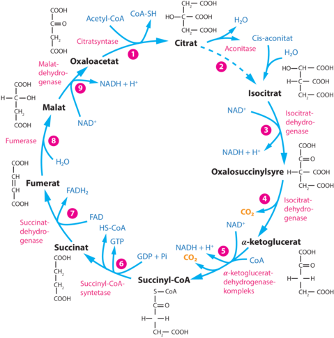

Hvad er Citronsyrecyklus?
Citornsyrecyklusen som også kaldes Krebs’ cyklus er en cyklisk proces, det er den centrale energigivende del af den aerode oxidation. Det er et led i omsætningen af kulhydrater, aminosyrer og fedtsyrer, som før de indtræder i cyklussen. Cyklussen har fåret navnet, fordi at den første reaktion af i alt ni reaktioner, er citronsyreren. Cyklussen er der hvor de stoffer der indgår i cyklussen, ikke bliver forbrugt, men kan anvendes igen og igen.
Billedet kommer fra systimeDet starter ved det første led i cyklussen som hedder Citratsyntase.
Led 1: Citratsyntase bruger Oxaloacetat og Acetyl-CoA, som laver Citrat, hvilket skal bruges i andet led som hedder Aconitase
Led 2: i Aconitasen udgiver Citraten noget H2O og indtager Cis-aconitat og H2O ind som bliver til Isocitrat
Led 3: i Isocitratdehydrogenasen bliver Isocitrat til Oxalosuccinylsyre ved hjælp af NAD+ , den udgiver også noget NADH+ H+
Led 4: som også hedder Isocitratdehydrogenasen Oxalosuccinylsyre bliver til a-ketoglucerat og det udgiver noget CO2
Led 5: i a-ketogluceratdehydrogenasekompleks bliver a-ketoglucerat til Succinyl-CoA med noget hjælp fra NAD+ og CoA og udgiver noget CO2 og NADH+ + H+
Led 6: i Succinyl-CoA-syntetasen bliver Succinyl-CoA til Succinat med noget hjælp fra GDP + Pi og udgiver noget GTP og HS-CoA
Led 7: i Succinatdehydrogenasen bliver Succinat til Fumerat med noget hjælp fra FAD og udgiver noget FADH2
Led 8: i fumerasen bliver fumerat til Malat med noget hjælp fra H2O
Led 9: i Malatdehydrogenasen bliver Malat til Oxaloacetat med noget hjælp fra NAD+ og udgiver noget NADH + H+
Så på den måde går Citronsyrecyklussen i ring. Så citronsyrecyklussen danner 2 ATP, 8 NADH, og 2 FADH2 , som i alt ville lave 25 ATP. Dermed får man altså i alt 30 ATP pr. glukosemolekyle.